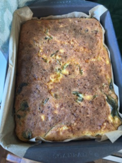

Beef
Roast
BBQ
Govedina sa prelivom - 55
Lazanje - 68
Musaka- 6
Spaghetti
Pljeskavice - 38
Wraps - 69
Korean beef bowl - 22
Punjene paprike - 1
Beef casserole - 2
Sarma - 3
Junece snicle u sosu
Musaka sa kiselim kupusom - 39
Spaghetti - 56
Curried Beef Mince - 81
Burgers
One pan dinner - Minced beef with rice and pees - Ruhamas Food - 85
Ingredients: 5 tbsp extra virgin olive oil 1 large onion, sliced 1 tbsp salt 1/2 tbsp turmeric 1 tsp black pepper 1/2 tbsp garlic powder 2 lbs ground beef 2 cups basmati rice, washed and drained 1 pkg (16 oz / 454 g) frozen petit peas Handful of fresh chopped parsley 1/2 tbsp Dijon mustard 1/2 tbsp honey or date syrup 4 cups boiling water Instructions: Sauté the aromatics: Heat olive oil in a large, wide pot over medium heat. Add the sliced onion, salt, turmeric, black pepper, and garlic powder. Sauté for 1 minute.Brown the beef: Add the ground beef, breaking it up with a wooden spoon. Cook for 4 to 5 minutes until browned.Combine: Stir in the washed basmati rice, frozen petit peas, chopped parsley, Dijon mustard, and honey (or date syrup) until well mixed. Add liquid and cover: Pour in 4 cups of boiling water and stir slightly. Cover the pot with a lid wrapped in a clean towel (to trap steam). Simmer: Cook on medium heat for 5 minutes, then turn the heat down to low and cook for 40 minutes. Fluff and serve warm.
Beef and Potato Curry - 86
Instructions: Fry onions, add garlic and green chillies, friesh gingerand fry a bit. Add 1tsp cummin, 1 tsp ground coriander, 1 1/2 garam massala, 1/2 tumeric, 1 tsp black pepper, fry. Add tomato paste, saute for 2min, add cubed beef, stir to combine, bring to boil. Add boiling water and cover on low heat and cook for 30 min. Add potatos and cook for another 30min covered. Add coconut milk and at the very end chopped coriander.
One pan dinner - Beef Stew with Chickpeas - Ruhamas Food- 86
Ingredients 2 tbsp all-purpose flour 4 tbsp olive oil 2 onions (sliced) 6 whole garlic cloves 1.5 tsp salt 1/2 tsp black pepper 1 tsp sweet paprika 1 tsp garlic powder 1 tbsp Ras El Hanut 2 cups precooked chickpeas 2 tbsp tomato paste 2 tbsp date syrup Water (to cover) Fresh chopped parsley (for garnish) Instructions Coat beef: Toss the beef cubes in the flour.Sauté aromatics: Heat olive oil in a wide skillet over medium heat. Add onions and garlic; stir for 1 minute. Sear meat: Add the floured beef and sear for 2 minutes until golden brown. Season: Add salt, pepper, paprika, garlic powder, and Ras el Hanut; stir well. Mix components: Stir in the chickpeas, tomato paste, and date syrup. Simmer: Pour in enough water to cover the meat. Cover with a lid and cook on the stove over medium heat for 30 minutes. Bake: Transfer the covered pan to the oven at 350°F (approx. 175°C) and bake for 2.5 to 3 hours, checking occasionally to add water if the liquid gets too low.Serve: Garnish with fresh chopped parsley.
Chicken
Pohovane snicle
Pijano pile - 1
Pileca krilca u rerni
Pijano pile
Green curry
Shicken shawarma
Cabbage and chicken stir fry - 61
Pad See Ew - 64
Butter Chicken - 72
Fried Cabbage with noodles and bacon - 73
Piletina sa limunom - 76
One pan dinner - Chicken and Rice - Ruhamas Food- 85
Ingredients: 2 pounds chicken cutlets, cut into strips 1 onion, chopped 2 carrots, shredded 3 celery stalks with leaves, chopped 1/4 cup extra virgin olive oil 1.5 teaspoons salt 1/2 teaspoon black pepper 1 teaspoon turmeric 1 teaspoon garlic powder 1 teaspoon onion powder 2 tablespoons chopped dill 2 cups of basmati rice washed and drained 4 cups boiling water Garnish: Sprinkle of Maldon salt Pan size: 4.5 qt, 12-inch pan Method: 1. In a wide pan over medium heat, pour the olive oil. Add the onion, carrots, and celery. 2. Add the salt, pepper, turmeric, onion powder, and garlic powder. Stir and cook for about 2 minutes. 3. Add the sliced chicken and cook for about 3 minutes, until it gets a nice color. 4. Add the rice and dill. Mix well until everything is coated and turns a beautiful golden color. 5. Pour in the boiling water, stir, and cook on high heat for 5 minutes. 6. Lower the heat, cover, and cook for 25 minutes. 7. Garnish with Maldon salt and fluff gently with a wooden spoon. TIP: If you want extra fluffy rice, after turning off the heat, let it sit covered for 10 minutes before fluffing.
One pan dinner - Chicken thighs and Rice - Ruhamas Food
Ingredients For the rice 2 cups of basmati rice 2 tomatoes, shredded 2 carrots, shredded 1 shallot, shredded 1.5 teaspoons of salt 1/2 teaspoon of black pepper 1 teaspoon of paprika 1 teaspoon of Baharat spice 3 tablespoons of tomato paste 3 minced garlic cloves Handful of chopped cilantro or parsley 1 tablespoon of pomegranate molasses 1/4 cup of olive oil 1 tablespoon of date syrup 4 cups of boiling water For the chicken 10 pieces of chicken thighs, boneless and skinless Flaky salt and pepper for the chicken Tomato sauce for the oven 1 tablespoon of tomato paste 1/4 cup of boiling water Garnish Chopped cilantro or parsley Instructions Preheat the oven to 420F / 220C. In an oven-safe pan, add all the rice ingredients except for the boiling water. Mix it all together and spread the rice in one layer. Add the chicken thighs on top of the rice and season with flaky salt and pepper. Pour the boiling water and cover with wet parchment paper and aluminum foil. Transfer to the oven on 420F for 50 minutes. In a small bowl, mix the tomato paste and boiling water until smooth. Remove the cover and pour the tomato sauce on top of the chicken thighs. Switch the oven to convection broil on 450F and broil for 10 more minutes. Garnish with chopped cilantro.
Pork
Svinjske kremenadle u sosu
BBQ pork
Lamb
Kremenadle u sosu
Rosies Curry lamb - 12
Jagnjeca corba - 25
Jagnjeca noga - 25
Scotch Broth - 37
Fish
Frozen fish
Whole fish from markets
Salmon pasta - 7
One pan dinner - Fish and Veggies - Ruhamas Food- 85
Vegeterian
Pita sa sirom i prasom
Vladin Pasulj - 8
Proja - 38
1 solja kukuruznog brasna se umesa sa 1 soljom belog brasna i doda se prasak za pecivo. U to se doda 1/4 solje ulja, 1 1/2 kasicica soli, parce tvrdog sira, pola onog cottage proteinskog sira. U sve to se doda mleka da postane skoro kao za palacinke. Ja isto stavljam spanac, redjam malo testa malo spanaca. Moze da se pospe susamom i pece se.
Pizza - 67 & 84
Podvarak-4
Ikin Yellow curry
Wild rice mashroom risoto - 45
Supes
Supa od spanaca
Supa od karfijola - 41
Krompir supa - 41
Chicken soup
Salads
Easy quinoa salad - 48
Carrot salad - Joohee - 49
Macaroni salad - Milena - 49
Salata od cvekle - 49
Tomato and mint salad - 61